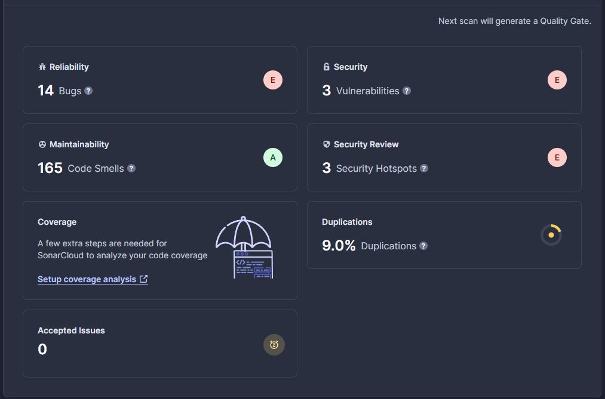
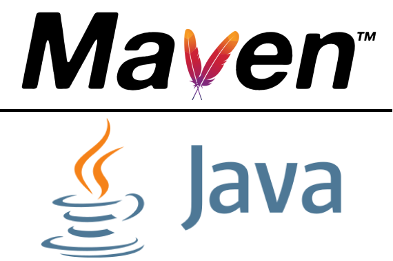
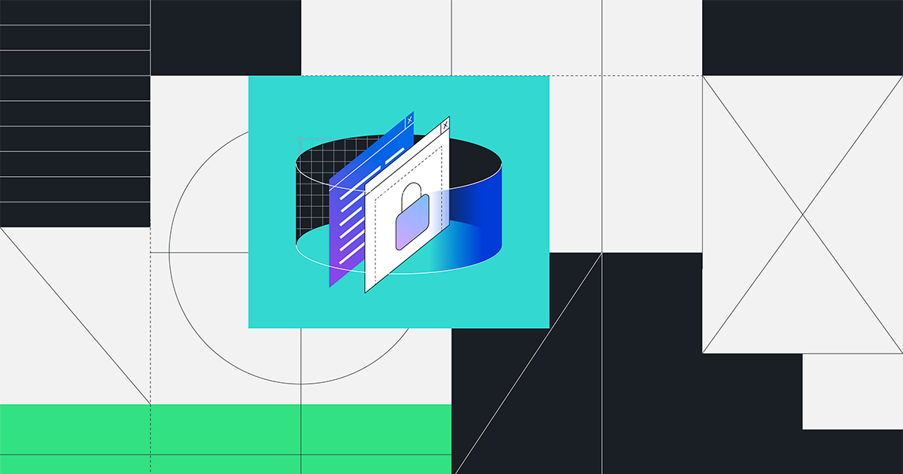

Calidad de Software y Gestión de Deuda Técnica
Juan Pablo Daza Pinzón
 Scroll Down
Scroll DownPlataforma de Comercio Electronico
El proyecto consiste de una plataforma de comercio eléctronico con almacenando información en una base de datos y haciendo uso de REST.
Code Smells y Testing Debt
Duplicación de código
En varias clases del proyecto hay codigo que realiza la misma funcion pero escrito en distintas ubicaciones
Documentación
El proyecto no tiene una documentación adecuada, lo que hace dificil la comprensión del mismo.
Clases Dios
Existen varias clases Dios que modifican a los usuarios o productos sin hacer uso de los métodos destinados para esto.
Codigo muerto
Existen fragmentos de código comentados que no se usan para nada pero siguen ahi.
Métodos muy largos
Existen algunos métodos demasiado largos que dificultan comprender lo que hace el código.
Testing Debt
El proyecto no cuenta con ningun tipo de pruebas que ayuden a la identificación de errores.
Architecture Smells
Monolito
El proyecto esta construido como un Monolito, lo que complica su escalabilidad.
Seguridad
No se implementan practicas de seguridad, lo que lo vuelve vulnerable a ataques comunes.
CI
No existe un proceso de Continuous Integration, o pipelines que ayude en la mantenibilidad del código.
Herramientas utilizadas

GitHub Copilot
Es una IA que ayuda a los desarrolladores a solucionar problemas con el código y proporciona sugerencias.
SonarCloud
Es una herramienta que ayuda a identificar vulnerabilidades y malas practicas dentro del código.

GitHub Actions
Nos ayuda a ejecutar workflows dentro de los repositorios y automatizar procesos. Incluso esta página se puede ver gracias a un Workflow automatizado por GitHub Actions.
Continuous Integration
SonarCloud
El overview de SonarCloud nos ayuda a ver los problemas que tiene nuestro código.
Java CI with Maven
Permite el despliegue de la aplicacion en una maquina virtual proporcionada por GitHub para comprobar la compilación del código y la ejecución de sus pruebas.
Dependency Review
Nos ayuda a generar un reporte de las dependencias del código con la finalidad de detectar vulnerabilidades o si es necesario la actulización de estas.
Calidad del software